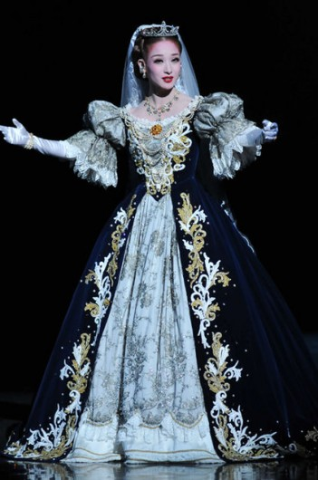

宝塚まとめ
蘭乃はな
元花組娘役トップスター
愛称：らんちゃん

らんとむ先代トップの真飛聖の相手役から現トップ明日海りおの一作目まで花男トップ三人を相手にした魔性の娘役・・・・というのは冗談。 彼女に関しては若くしてトップになったことや、そういった背景からヅカファンからあまり人気がないようであるが、 全身筋肉でできてるんと違いますかというほどのしなやかな動きとその堂々たる眼差しには花娘１(娘トップを娘１ということがあります) としての説得力があると思う。歌はあまり得意ではないようだが、妹と二人揃って少女的な声質(アニメ声ともいう。 宝塚的ではないという意見もあるが・・・)や、「CONGA!」のデュエダンで観られる驚くべき身体能力など、個人的には好きな娘役の一人である。 退団後も大作「エリザベート」のタイトルロールであるエリザベートを演じ、来年の再演では再びエリザベートに抜擢されるなど精力的に活動している。